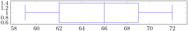
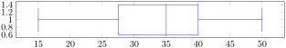
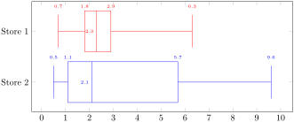
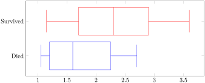

Use the coefficient of variation to compare standard deviations
Create a five-number summary of a data set
Create a box plot for a data set
Consider these three sets of quiz scores:
Section A: 5 5 5 5 5 5 5 5 5 5
Section B: 0 0 0 0 0 10 10 10 10 10
Section C: 4 4 4 5 5 5 5 6 6 6
All three of these sets of data have a mean of 5 and median of 5, yet the sets of scores are clearly quite different. In section A, everyone had the same score; in section B half the class got no points and the other half got a perfect score, assuming this was a 10-point quiz. Section C was not as consistent as section A, but not as widely varied as section B.
In addition to the mean and median, which are measures of the "typical" or "middle" value, we also need a measure of how "spread out" or varied each data set is.
There are several ways to measure this "spread" of the data. The first is the simplest and is called the range.
Definition7.3.1.Range.
The range is the difference between the maximum value and the minimum value of the data set.
Example7.3.2.
Using the quiz scores from above,
For section A, the range is 0 since both maximum and minimum are 5 and \(5-5=0\)
For section B, the range is 10 since \(10-0=10\)
For section C, the range is 2 since \(6-4=2\)
In the last example, the range seems to be revealing how spread out the data is. However, suppose we add a fourth section, Section D, with scores 0 5 5 5 5 5 5 5 5 10.
This section also has a mean and median of 5. The range is 10, yet this data set is quite different than Section B. To better illuminate the differences, we’ll have to turn to more sophisticated measures of variation.
Note7.3.3.Standard Deviation.
The standard deviation is a measure of variation based on measuring how far each data value deviates, or is \ different, from the mean. A few important characteristics:
Standard deviation is always positive. Standard deviation will be zero if all the data values are equal, and will get larger as the data spreads out.
Standard deviation has the same units as the original data.
Standard deviation, like the mean, can be highly influenced by outliers.
Using the data from section D, we could compute for each data value the difference between the data value and the mean:
Table7.3.4.
data value
deviation: data value - mean
0
\(0 - 5 = -5\)
5
\(5 - 5 = 0\)
5
\(5 - 5 = 0\)
5
\(5 - 5 = 0\)
5
\(5 - 5 = 0\)
5
\(5 - 5 = 0\)
5
\(5 - 5 = 0\)
5
\(5 - 5 = 0\)
5
\(5 - 5 = 0\)
10
\(10 - 5 = 5\)
We would like to get an idea of the "average" deviation from the mean, but if we find the average of the values in the second column the negative and positive values cancel each other out (this will always happen), so to prevent this we square every value in the second column:
We then add the squared deviations up to get \(25+0+0+0+0+0+0+0+0+25=50\text{.}\) Ordinarily we would then divide by the number of scores, \(n\text{,}\) (in this case, 10) to find the mean of the deviations. But we only do this if the data set represents a population; if the data set represents a sample (as it almost always does), we instead divide by \(n-1\) (in this case, \(10-1=9\)).
So in our example, we would have \(\frac{50}{10}=5\) if section D represents a population and \(\frac{50}{9}=
5.56\) if section D represents a sample. These values (5 and 5.56) are called, respectively, the population variance and the sample variance for section D.
Variance can be a useful statistical concept, but note that the units of variance in this instance would be points- squared since we squared all of the deviations. What are points-squared? Good question. We would rather deal with the units we started with (points in this case), so to convert back we take the square root and get:
population standard deviation = \(\sqrt{\frac{50}{10}}=\sqrt{5} \approx 2.2\)
sample standard deviation = \(\sqrt{\frac{50}{9}} \approx 2.4\)
If we are unsure whether the data set is a sample or a population, we will usually assume it is a sample, and we will round answers to one more decimal place than the original data, as we have done above.
Note7.3.5.Computing Standard Deviation.
To compute standard deviation:
Find the deviation of each data from the mean. In other words, subtract the mean from the data value.
Square each deviation.
Add the squared deviations.
Divide by \(n\text{,}\) the number of data values, if the data represents a whole population; divide by \(n-1\text{,}\) if the data is from a sample.
Compute the square root of the result.
Example7.3.6.
Computing the standard deviation for Section B above, we first calculate that the mean is 5. Using a table can help keep track of your computations for the standard deviation:
Table7.3.7.
data value
deviation
deviation squared
0
\(0 - 5 = -5\)
\(\left(-5\right)^2 = 25\)
0
\(0 - 5 = -5\)
\(\left(-5\right)^2 = 25\)
0
\(0 - 5 = -5\)
\(\left(-5\right)^2 = 25\)
0
\(0 - 5 = -5\)
\(\left(-5\right)^2 = 25\)
0
\(0 - 5 = -5\)
\(\left(-5\right)^2 = 25\)
10
\(10 - 5 = 5\)
\(\left(5\right)^2 = 25\)
10
\(10 - 5 = 5\)
\(\left(5\right)^2 = 25\)
10
\(10 - 5 = 5\)
\(\left(5\right)^2 = 25\)
10
\(10 - 5 = 5\)
\(\left(5\right)^2 = 25\)
10
\(10 - 5 = 5\)
\(\left(5\right)^2 = 25\)
Assuming this data represents a population, we will add the squared deviations, divide by 10, the number of data values, and compute the square root:
If we want to compare standard deviations of different datasets, with different means, we have to compute the coefficient of varation. The coefficient of variation gives information about how large the standard deviation is relative to the mean.
Definition7.3.9.Coefficient of Variation.
For a dataset with a mean value of \(\mu\) and and standard deviation of \(s\text{,}\) the coefficient of variation is:
Stock A has a CV of 8.6% and Stock B has a CV of 6.25%
Since Stock A has a larger CV, it had prices that were more spread out. Therefore, Stock B had more consistent prices over the past year.
Where standard deviation is a measure of variation based on the mean, quartiles are based on the median.
Quartiles are values that divide the data in quarters.
The first quartile (\(Q_1\)) is the value so that 25% of the data values are below it; the third quartile (\(Q_3\)) is the value so that 75% of the data values are below it. You may have guessed that the second quartile is the same as the median, since the median is the value so that 50% of the data values are below it.
This divides the data into quarters; 25% of the data is between the minimum and \(Q_1\text{,}\) 25% is between \(Q_1\) and the median, 25% is between the median and \(Q_3\text{,}\) and 25% is between \(Q_3\) and the maximum value.
While quartiles are not a 1-number summary of variation like standard deviation, the quartiles are used with the median, minimum, and maximum values to form a 5 number summary of the data.
Definition7.3.11.Five number summary.
The five number summary takes this form:
Minimum, \(Q_1\text{,}\) Median, \(Q_3\text{,}\) Maximum
To find the first quartile, we need to find the data value so that 25% of the data is below it. If \(n\) is the number of data values, we compute a locator by finding 25% of \(n\text{.}\) If this locator is a decimal value, we round up, and find the data value in that position. If the locator is a whole number, we find the mean of the data value in that position and the next data value. This is identical to the process we used to find the median, except we use 25% of the data values rather than half the data values as the locator.
Note7.3.12.Finding \(Q_1\).
To find the first quartile, \(Q_1\text{:}\)
Begin by ordering the data from smallest to largest
Compute the locator: \(L=0.25n\)
If L is a decimal value: Round up to \(L+\)
Use the data value in the \(L+^{th}\) position
If L is a whole number: Find the mean of the data values in the \(L^{th}\) and \(L+1^{th}\) positions.
Note7.3.13.Finding \(Q_3\).
To find the third quartile, \(Q_3\text{:}\)
Use the same procedure as for \(Q_1\text{,}\) but with locator:\(L=0.75n\)
Examples should help make this clearer.
Example7.3.14.
Suppose we have measured 9 females and their heights (in inches), sorted from smallest to largest are:
59 60 62 64 66 67 69 70 72
To find the first quartile we first compute the locator: 25% of 9 is \(L=0.25\cdot 9=2.25\text{.}\) Since this value is not a whole number, we round up to 3.
The first quartile will be the third data value: 62 inches.
To find the third quartile, we again compute the locator: 75% of 9 is \(0.75 \cdot 9=6.75\text{.}\) Since this value is not a whole number, we round up to 7.
The third quartile will be the seventh data value: 69 inches.
Example7.3.15.
Suppose we had measured 8 females and their heights (in inches), sorted from smallest to largest are:
59 60 62 64 66 67 69 70
To find the first quartile we first compute the locator: 25% of 8 is \(L=0.25(8)=2\text{.}\)
Since this value is a whole number, we will find the mean of the 2nd and 3rd data values: \(\frac{60+62}{2} = 61\text{,}\) so the first quartile is 61 inches.
The third quartile is computed similarly, using 75% instead of 25%. \(L=0.75(8)=6\text{.}\)
This is a whole number, so we will find the mean of the 6th and 7th data values: \(\frac{67+69}{2}=68\text{,}\) so \(Q_3\) is 68.
Note that the median could be computed the same way, using 50%.
The 5-number summary combines the first and third quartile with the minimum, median, and maximum values.
Example7.3.16.
For the 9 female sample, the median is 66, the minimum is 59, and the maximum is 72. The 5 number summary is: 59, 62, 66, 69, 72.
For the 8 female sample, the median is 65, the minimum is 59, and the maximum is 70, so the 5 number summary would be: 59, 61, 65, 68, 70.
Example7.3.17.
Returning to our quiz score data. In each case, the first quartile locator is \(0.25\cdot 10=2.5\text{,}\) so the first quartile will be the 3rd data value, and the third quartile will be the 8th data value. Creating the five-number summaries:
Of course, with a relatively small data set, finding a five-number summary is a bit silly, since the summary contains almost as many values as the original data.
Problem7.3.18.Try It Now.
The total cost of textbooks for the term was collected from 36 students. Find the 5 number summary of this data.
By adding the frequencies, we can see there are 100 data values represented in the table. In Example 20, we found the median was $35 thousand. We can see in the table that the minimum income is $15 thousand, and the maximum is $50 thousand.
To find \(Q_1\text{,}\) we calculate the locator: \(L = 0.25\left(100\right) = 25\text{.}\) This is a whole number, so \(Q_1\) will be the mean of the 25th and 26th data values.
Counting up in the data as we did before,
Table7.3.21.
Income (thousands of dollars)
Frequency
Values
15
6
1 - 6
20
8
7 - 14
25
11
15 - 25
30
17
26 - 42
35
19
43 - 61
40
20
62 - 81
45
12
82 - 93
50
7
94 - 100
The 25th data value is $25 thousand, and the 26th data value is $30 thousand, so \(Q_1\) will be the mean of these: \(\frac{25+30}{2}=\$27.5\) thousand.
To find \(Q_3\text{,}\) we calculate the locator: \(L=0.75\left(100\right)=75\text{.}\) This is a whole number, so \(Q_3\) will be the mean of the 75th and 76th data values. Looking at our table above, we can see that both the 75th and 76th data values are $40 thousand, so \(Q_3\) will be $40 thousand.
Putting these values together into a five-number summary, we get: 15, 27.5, 35, 40, 50
Note that the 5 number summary divides the data into four intervals, each of which will contain about 25% of the data. In the previous example, that means about 25% of households have income between $40 thousand and $50 thousand.
For visualizing data, there is a graphical representation of a 5-number summary called a box plot, or box and whisker graph.
Note7.3.22.Box Plot.
A box plot is a graphical representation of a five-number summary.
To create a box plot, a number line is first drawn. A box is drawn from the first quartile to the third quartile, and a line is drawn through the box at the median. “Whiskers” are extended out to the minimum and maximum values.
Example7.3.23.
The box plot below is based on the 9 female height data with 5 number summary:
59, 62, 66, 69, 72

Figure7.3.24.Image Credit: RRCC
Example7.3.25.
The box plot below is based on the household income data with 5 number summary:
15, 27.5, 35, 40, 50

Figure7.3.26.Image Credit: RRCC
Example7.3.27.
The box plot of service times (in minutes) for two fast-food restaurants is shown below.

Figure7.3.28.Image Credit: RRCC
While store 2 had a slightly shorter median service time (2.1 minutes vs. 2.3 minutes), store 2 is less consistent, with a wider spread of the data.
At store 1, 75% of customers were served within 2.9 minutes, while at store 2, 75% of customers were served within 5.7 minutes.
Which store should you go to in a hurry? That depends upon your opinions about luck - 25% of customers at store 2 had to wait between 5.7 and 9.6 minutes.
Example7.3.29.
The boxplot below is based on the birth weights (in kg) of infants with severe idiopathic respiratory distress syndrome (SIRDS). The boxplot is separated to show the birth weights of infants who survived and those that did not.

Figure7.3.30.Image Credit: RRCC
Comparing the two groups, the boxplot reveals that the birth weights of the infants that died appear to be, overall, smaller than the weights of infants that survived. In fact, we can see that the median birth weight of infants that survived is the same as the third quartile of the infants that died.
Similarly, we can see that the first quartile of the survivors is larger than the median weight of those that died, meaning that over 75% of the survivors had a birth weight larger than the median birth weight of those that died.
Looking at the maximum value for those that died and the third quartile of the survivors, we can see that over 25% of the survivors had birth weights higher than the heaviest infant that died.
The box plot gives us a quick, albeit informal, way to determine that birth weight is quite likely linked to survival of infants with SIRDS.